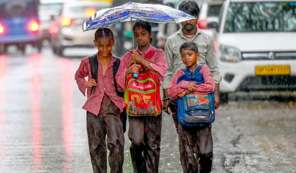

Heavy rainfall was reported in the city after several days of hot and humid weather. The rain brought relief to residents and helped reduce the temperature. Many people welcomed the change in weather.
The rainfall started in the morning and continued for several hours. Roads in some areas became wet and traffic moved slowly. 30 August 2026 was marked by heavy rain in several parts of the city.
The rain also helped improve the local environment by providing water to plants and reducing dust in the air. However, some low-lying areas faced waterlogging. People were advised to travel carefully and avoid unnecessary travel.
According to local weather information, more rainfall may occur in the coming days. Residents are advised to keep updated with weather reports and take necessary precautions during heavy rainfall.

This article is written for a college news webpage and is based on general information about heavy rainfall and its effects.